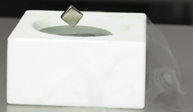

Université Pierre et Marie Curie
À la une
Karine Clément, directrice de l'ICAN, créatrice de futurs
À l'occasion de la journée des droits des femmes, l'UPMC met à l'honneur 11 scientifiques.
« Être une femme en médecine et recherche n’est pas un frein jusqu’à un certain stade, la valorisation des carrières et la progression vers des postes à haute responsabilité concernent autant les hommes que les femmes, mais ces dernières y accèdent plus difficilement. »
Directrice de l’Institut hospitalo-universitaire ICAN, l’Institut de CardiometAbolisme et Nutrition depuis 2011, ...
En savoir +Navigation secondaire : abonnements, dernières nouvelles
Navigation secondaire : accès rapides, services personnalisés

Toute l'actu
Actualités
- Campagne de candidature et d'inscription pour l'année 2013/2014
- Campagne d'admission post-bac - APB 2013
- Candidature des étudiants étrangers hors Espace européen et hors programmes d'échanges
- Recrutement des enseignants-chercheurs (session synchronisée) ANTEE 2013
- Sorbonne Universités : lancement des premières actions de Sorbonne Universités
- Rendez-vous aux midis de l'apprentissage les 26 et 27 mars 2013 !
- Formation égalité femmes/hommes : 145 diplômés en 9 ans
- Sept facteurs de risque génétiques associés à la DMLA, l'une des principales causes de cécité
- Accélérer le transfert de technologies vers les entreprises
- Glissements de terrain sous-marins et tsunamis
- Crise alimentaire : l'UPMC forme des experts qualité/sécurité à Roscoff
- L’accompagnement des étudiants handicapés de l’UPMC, de la formation à l’entreprise
- GrippeNet.fr : bilan au pic de l'épidémie